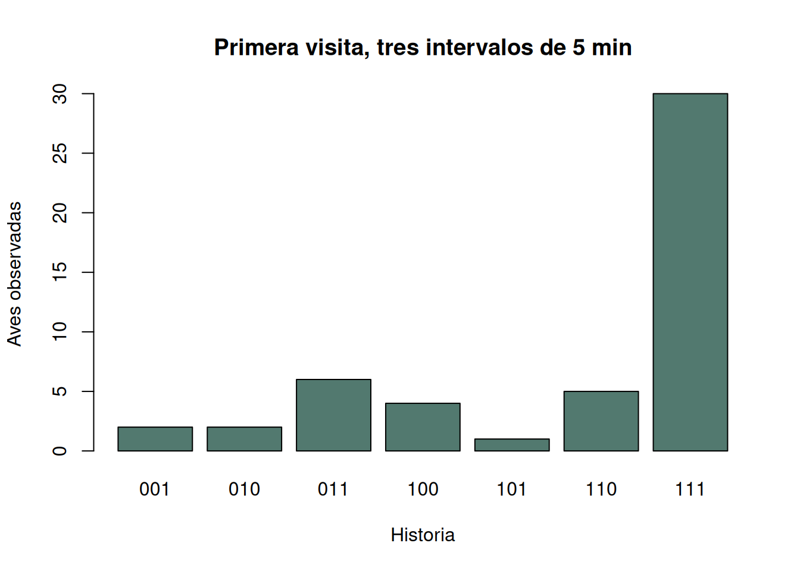
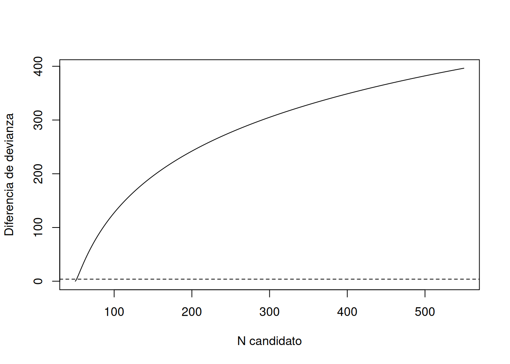

if (!requireNamespace("unmarked", quietly = TRUE)) {
stop("Se requiere el paquete 'unmarked' y sus archivos csv.")
}
ruta_hist <- system.file("csv", "alfl.csv", package = "unmarked")
ruta_cov <- system.file("csv", "alflCovs.csv", package = "unmarked")
stopifnot(nzchar(ruta_hist), nzchar(ruta_cov), file.exists(ruta_hist),
file.exists(ruta_cov))
alfl <- read.csv(ruta_hist, stringsAsFactors = FALSE)
alflCovs <- read.csv(ruta_cov, stringsAsFactors = FALSE)
names(alflCovs)[1] <- "id"
cols_y <- paste0("interval", 1:3)
stopifnot(all(c("id", "survey", cols_y) %in% names(alfl)),
all(c("id", "struct", "woody", "time.1", "date.1") %in%
names(alflCovs)),
!anyDuplicated(alflCovs$id), all(as.matrix(alfl[cols_y]) %in% 0:1),
all(alfl$id %in% alflCovs$id))
auditoria <- data.frame(
filas_individuo_visita = nrow(alfl), puntos_marco = nrow(alflCovs),
puntos_con_deteccion = length(unique(alfl$id)),
visitas = paste(sort(unique(alfl$survey)), collapse = ","),
faltantes_historias = sum(is.na(alfl[cols_y]))
)
auditoria
#> filas_individuo_visita puntos_marco puntos_con_deteccion visitas
#> 1 98 50 35 1,2,3
#> faltantes_historias
#> 1 06 Remoción, captura-recaptura e índices de abundancia
Estimación cerrada, esfuerzo y capturabilidad
6.1 Contar lo no observado
Capturas y detecciones repetidas contienen información sobre la fracción no observada. La inferencia requiere distinguir población \(N\), número observado \(n\), probabilidad de captura \(p\) y esfuerzo. Un índice, en cambio, puede conservar solo \(C=qN\): sin conocer o estabilizar \(q\), no identifica \(N\) (Manly y Navarro Alberto 2015; Sutherland 2006).
6.2 Captura-recaptura cerrada
En dos ocasiones se marcan \(n_1\) individuos; en la segunda se capturan \(n_2\), de los cuales \(m_2\) estaban marcados. Bajo cierre, mezcla, marcas persistentes, identificación correcta y captura comparable, Lincoln–Petersen estima \(n_1n_2/m_2\). La corrección de Chapman es
\[ \widehat N_C=\frac{(n_1+1)(n_2+1)}{m_2+1}-1, \]
con varianza
\[ \widehat{\operatorname{Var}}(\widehat N_C)= \frac{(n_1+1)(n_2+1)(n_1-m_2)(n_2-m_2)} {(m_2+1)^2(m_2+2)}. \]
Con tres ocasiones, una historia 101 registra captura, ausencia y recaptura. En el modelo cerrado \(M_0\), cada individuo tiene probabilidad constante \(p\), una historia con \(k\) capturas tiene probabilidad \(p^k(1-p)^{3-k}\) y la probabilidad de no observarlo es \((1-p)^3\). Para un \(N\) candidato, la máxima verosimilitud usa \(\widehat p=M/(3N)\), donde \(M\) es el total de capturas. El perfil discreto de \(N\) vuelve visibles los supuestos y la asimetría de su incertidumbre (Manly y Navarro Alberto 2015).
La heterogeneidad de \(p\) suele dejar individuos poco capturables fuera de la muestra y sesgar \(N\) hacia abajo. Respuesta a la marca, diferencias temporales, trampas saturadas y movimiento de borde también rompen \(M_0\). Más ocasiones no reparan automáticamente un diseño inadecuado.
6.3 Remoción
En remoción, los individuos capturados se retiran o dejan de estar disponibles. Con población cerrada y probabilidad constante, el número capturado por primera vez en la ocasión \(j\) tiene esperanza
\[ E(C_j)=Np(1-p)^{j-1}. \]
La disminución entre ocasiones informa \(p\) y la cola no observada informa \(N\). Debe distinguirse remoción física de remoción de la lista por identificación. La entrada de individuos, aprendizaje, agotamiento local desigual o esfuerzo variable pueden imitar la curva descendente (Henderson y Southwood 2016).
6.4 Cambio en razón e índices
Si una intervención añade o retira una cantidad conocida \(R\) de una categoría, y la proporción de esa categoría cambia de \(P_1\) a \(P_2\), el tamaño previo puede estimarse por cambio en razón. Para una remoción conocida de la categoría marcada,
\[ \widehat N_1=R\frac{1-P_2}{P_1-P_2}, \]
con signos y fórmula adaptados al tipo de cambio. Se requiere población cerrada salvo la intervención, clasificación correcta, mezcla rápida y muestras de composición representativas antes y después. Si \(P_1\approx P_2\), la estimación es inestable (Manly y Navarro Alberto 2015).
Captura por unidad de esfuerzo, conteos acústicos y tasas de huellas son índices. Son útiles para tendencia si esfuerzo, disponibilidad, área y detectabilidad son comparables. Estandarizar solo horas no controla cambios de observador, clima, equipo o distribución espacial. Un índice calibrado contra estimaciones periódicas de \(N\) es más defendible que asumir proporcionalidad.
6.5 Supuestos y errores de diseño
- cierre demográfico y geográfico durante las ocasiones;
- individuos reconocibles y marcas no perdidas ni mal leídas;
- historia de cada individuo registrada en el orden correcto;
- captura independiente entre individuos, salvo estructura modelada;
- forma de heterogeneidad o respuesta conductual compatible con el estimador;
- esfuerzo y duración comparables entre ocasiones;
- individuos no observados pertenecen al mismo marco que los observados.
Errores comunes son contar capturas como individuos, usar Petersen con \(m_2=0\), ignorar pérdidas de marca, extender cierre de minutos a meses, escoger un modelo complejo con pocas recapturas, llamar abundancia a CPUE y reportar un intervalo simétrico cuando la verosimilitud de \(N\) tiene cola larga.
6.6 Aplicación real: mosquero de alisos
6.6.1 Procedencia, diseño y estimando
El paquete unmarked distribuye alfl.csv y alflCovs.csv (Kellner et al. 2023). Según su documentación, son conteos de punto de radio fijo para mosquero de alisos (Empidonax alnorum) en 2005: cada visita de 15 minutos se dividió en tres intervalos de 5 minutos y los observadores siguieron individuos durante la visita (Chandler et al. 2009). Hay tres visitas a los puntos. Usaremos la primera y trataremos cada ave seguida durante 15 minutos como si tuviera una marca temporal.
El estimando principal es el número de aves disponibles en los puntos durante la primera visita, bajo \(M_0\), no el tamaño regional de la especie. Las covariables documentan parcelas de radio 50 m, estructura, cobertura leñosa, hora y fecha; no se usarán para añadir un modelo moderno de abundancia.
6.6.2 Disponibilidad, importación y auditoría
Las filas son individuos observados dentro de una visita; id identifica el punto, no al ave. Los puntos sin aves existen en alflCovs y son necesarios para describir el marco, aunque el análisis agregado estima el total disponible en todos los puntos de la primera visita.
6.6.3 Historias y exploración
v1 <- alfl[alfl$survey == 1, ]
v1$historia <- do.call(paste0, v1[cols_y])
n_h <- table(factor(v1$historia,
levels = c("001", "010", "011", "100", "101", "110", "111")))
n_h
#>
#> 001 010 011 100 101 110 111
#> 2 2 6 4 1 5 30
colSums(v1[cols_y])
#> interval1 interval2 interval3
#> 40 43 39
barplot(n_h, col = "#52796f", xlab = "Historia", ylab = "Aves observadas",
main = "Primera visita, tres intervalos de 5 min")
La ausencia de 000 es estructural: las aves nunca detectadas no aparecen en el archivo. Las recapturas dentro de 15 minutos son la información que permite estimar esa celda.
6.6.4 Verosimilitud cerrada transparente
ajustar_M0 <- function(historias, J = nchar(historias[1]), extra = 500L) {
niveles <- sort(apply(expand.grid(rep(list(0:1), J)), 1,
paste0, collapse = ""))
obs <- niveles[niveles != paste0(rep(0, J), collapse = "")]
f <- table(factor(historias, levels = obs))
n <- sum(f); M <- sum(f * vapply(obs, function(z)
sum(strsplit(z, "", fixed = TRUE)[[1]] == "1"), numeric(1)))
Ns <- n:(n + extra)
ll <- vapply(Ns, function(N) {
p <- M / (J * N)
if (p <= 0 || p >= 1) return(-Inf)
k <- vapply(obs, function(z) sum(strsplit(z, "")[[1]] == "1"), numeric(1))
probs <- p^k * (1 - p)^(J - k)
n0 <- N - n
lgamma(N + 1) - lgamma(n0 + 1) - sum(lgamma(f + 1)) +
n0 * log((1 - p)^J) + sum(f * log(probs))
}, numeric(1))
imax <- which.max(ll)
soporte <- Ns[2 * (max(ll) - ll) <= qchisq(0.95, 1)]
list(N = Ns[imax], p = M / (J * Ns[imax]), logLik = ll,
Ns = Ns, IC = range(soporte), frecuencias = f)
}
m0 <- ajustar_M0(v1$historia)
data.frame(N = m0$N, p_por_intervalo = m0$p,
p_al_menos_una = 1 - (1 - m0$p)^3,
LI_perfil = m0$IC[1], LS_perfil = m0$IC[2],
aves_observadas = nrow(v1))
#> N p_por_intervalo p_al_menos_una LI_perfil LS_perfil aves_observadas
#> 1 50 0.8133333 0.9934957 50 51 50
plot(m0$Ns, 2 * (max(m0$logLik) - m0$logLik), type = "l",
xlab = "N candidato", ylab = "Diferencia de devianza")
abline(h = qchisq(0.95, 1), lty = 2)
El perfil evalúa cada \(N\) entero, incluye \(N-n\) historias 000 y estima \(p\) para ese candidato. El intervalo por razón de verosimilitudes conserva la asimetría y condiciona en cierre, seguimiento correcto y \(p\) constante.
6.6.5 Incertidumbre por simulación paramétrica
set.seed(6061)
historias_todas <- sort(apply(expand.grid(rep(list(0:1), 3)), 1,
paste0, collapse = ""))
k_todas <- vapply(strsplit(historias_todas, ""), function(z) sum(z == "1"), 0)
prob_todas <- m0$p^k_todas * (1 - m0$p)^(3 - k_todas)
boot_N <- replicate(1500, {
f <- as.vector(rmultinom(1, m0$N, prob_todas))
h <- rep(historias_todas[-1], f[-1])
if (length(h) == 0) return(NA_real_)
ajustar_M0(h, extra = 300L)$N
})
quantile(boot_N, c(0.025, 0.5, 0.975), na.rm = TRUE)
#> 2.5% 50% 97.5%
#> 48 50 50Este bootstrap cuantifica repetición bajo el mismo \(M_0\); no evalúa sesgo por heterogeneidad o movimiento.
6.6.6 Diagnóstico del patrón de historias
obs_names <- names(m0$frecuencias)
k_obs <- vapply(strsplit(obs_names, ""), function(z) sum(z == "1"), 0)
prob_obs <- m0$p^k_obs * (1 - m0$p)^(3 - k_obs)
esperadas <- m0$N * prob_obs
tabla_ajuste <- data.frame(historia = obs_names,
observada = as.numeric(m0$frecuencias),
esperada = esperadas,
residuo = (as.numeric(m0$frecuencias) - esperadas) /
sqrt(esperadas))
tabla_ajuste
#> historia observada esperada residuo
#> 1 001 2 1.417007 0.48975286
#> 2 010 2 1.417007 0.48975286
#> 3 011 6 6.174104 -0.07006821
#> 4 100 4 1.417007 2.16988691
#> 5 101 1 6.174104 -2.08232335
#> 6 110 5 6.174104 -0.47251924
#> 7 111 30 26.901452 0.59740711
sum(tabla_ajuste$residuo^2)
#> [1] 10.10927Grandes diferencias entre 100, 010 y 001 sugieren variación temporal; exceso de 111 junto con historias únicas puede sugerir heterogeneidad. Con siete celdas y parámetros estimados, el estadístico es exploratorio, no una prueba automática de cierre.
6.6.7 Sensibilidad: dos ocasiones y otras visitas
n1 <- sum(v1$interval1 == 1)
n2 <- sum(v1$interval3 == 1)
m2 <- sum(v1$interval1 == 1 & v1$interval3 == 1)
N_chapman <- (n1 + 1) * (n2 + 1) / (m2 + 1) - 1
var_chapman <- (n1 + 1) * (n2 + 1) * (n1 - m2) * (n2 - m2) /
((m2 + 1)^2 * (m2 + 2))
por_visita <- do.call(rbind, lapply(sort(unique(alfl$survey)), function(s) {
d <- alfl[alfl$survey == s, ]
h <- do.call(paste0, d[cols_y])
a <- ajustar_M0(h)
data.frame(visita = s, observadas = nrow(d), N_M0 = a$N, p = a$p,
LI = a$IC[1], LS = a$IC[2])
}))
c(n1 = n1, n2 = n2, recapturadas = m2, N_Chapman = N_chapman,
SE_Chapman = sqrt(var_chapman), N_tres_ocasiones = m0$N)
#> n1 n2 recapturadas N_Chapman
#> 40.00000 39.00000 31.00000 50.25000
#> SE_Chapman N_tres_ocasiones
#> 1.86931 50.00000
por_visita
#> visita observadas N_M0 p LI LS
#> 1 1 50 50 0.8133333 50 51
#> 2 2 31 32 0.6666667 31 35
#> 3 3 17 18 0.5740741 17 22Chapman usa solo los intervalos primero y tercero y responde al mismo cierre corto, pero descarta información intermedia. La variación entre visitas puede reflejar aves disponibles, hora, fecha o violaciones de \(p\) constante; no debe promediarse como si todas fueran la misma población cerrada.
6.6.8 Interpretación y reproducibilidad
La alta proporción de historias con varias detecciones suele producir una corrección moderada sobre \(n\). Aun así, \(N\) significa aves disponibles en los puntos durante 15 minutos. No incluye aves fuera de las parcelas ni demuestra densidad regional. La estructura de vegetación y cobertura leñosa pertenecen a parcelas de 50 m, pero asociarlas causalmente con abundancia requeriría diseño y modelo adicionales.
data.frame(paquete = "unmarked",
version = as.character(utils::packageVersion("unmarked")),
archivo_historias = basename(ruta_hist),
archivo_covariables = basename(ruta_cov), R = R.version.string)
#> paquete version archivo_historias archivo_covariables
#> 1 unmarked 1.5.1 alfl.csv alflCovs.csv
#> R
#> 1 R version 4.5.2 (2025-10-31)6.7 Síntesis
Captura-recaptura estima la fracción no observada a partir de reencuentros; remoción, a partir del agotamiento; y cambio en razón, a partir de una alteración conocida de la composición. Los tres métodos dependen de cierre, identificación y capturabilidad. Los índices requieren menos estructura, pero solo representan abundancia si su proporcionalidad es defendible. Historias, esfuerzo, perfil de verosimilitud, diagnóstico y sensibilidad deben acompañar la cifra final.
6.8 Actividad propuesta para el lector
Use exclusivamente survey == 2 de alfl.csv, un subconjunto distinto del caso principal. Reconstruya las historias, preserve en alflCovs.csv los puntos con cero detecciones y audite hora (time.2) y fecha (date.2). Estime \(N\) y \(p\) con el perfil cerrado de tres intervalos; calcule Chapman con los intervalos 1 y 3; compare incertidumbre y pérdida de información. Examine residuos por historia, repita el análisis excluyendo puntos visitados antes del primer cuartil de hora y discuta cierre, disponibilidad y por qué el resultado no es abundancia regional.